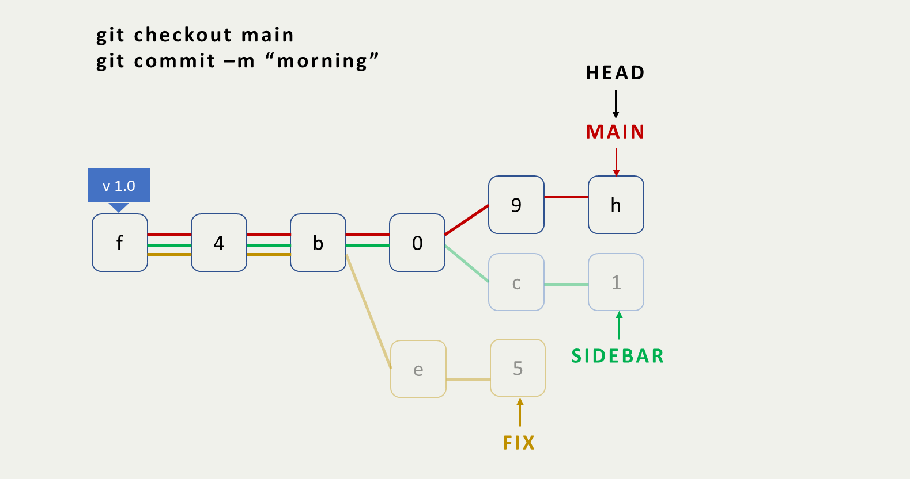

What is version control?
From wikipedia: version control (also known as revision control, source control, or source code management) is a class of systems responsible for managing changes to computer programs, documents, large web sites, or other collections of information. Version control is a component of software configuration management
Control VERSION
A version control system is a software that helps you control / manage different versions of source code.
- Two main types of VCS model:
- centralized - all users connect to a central repository

- distributed - each user has the entire repository on their machine


- centralized - all users connect to a central repository
Setup
Installing Git: Follow https://git-scm.com/downloads
Once installed, run
giton the command line to check if it displays the usage information.
$ git
usage: git [--version] [--help] [-C <path>] [-c <name>=<value>]
[--exec-path[=<path>]] [--html-path] [--man-path] [--info-path]
[-p | --paginate | -P | --no-pager] [--no-replace-objects] [--bare]
[--git-dir=<path>] [--work-tree=<path>] [--namespace=<name>]
[--super-prefix=<path>] [--config-env=<name>=<envvar>]
<command> [<args>]
These are common Git commands used in various situations:
start a working area (see also: git help tutorial)
clone Clone a repository into a new directory
init Create an empty Git repository or reinitialize an existing one
work on the current change (see also: git help everyday)
add Add file contents to the index
mv Move or rename a file, a directory, or a symlink
restore Restore working tree files
rm Remove files from the working tree and from the index
sparse-checkout Initialize and modify the sparse-checkout
examine the history and state (see also: git help revisions)
bisect Use binary search to find the commit that introduced a bug
diff Show changes between commits, commit and working tree, etc
grep Print lines matching a pattern
log Show commit logs
show Show various types of objects
status Show the working tree status
grow, mark and tweak your common history
branch List, create, or delete branches
commit Record changes to the repository
merge Join two or more development histories together
rebase Reapply commits on top of another base tip
reset Reset current HEAD to the specified state
switch Switch branches
tag Create, list, delete or verify a tag object signed with GPG
collaborate (see also: git help workflows)
fetch Download objects and refs from another repository
pull Fetch from and integrate with another repository or a local branch
push Update remote refs along with associated objects
'git help -a' and 'git help -g' list available subcommands and some
concept guides. See 'git help <command>' or 'git help <concept>'
to read about a specific subcommand or concept.
See 'git help git' for an overview of the system.Setup
First time Git configuration
# Tells Git your name
git config --global user.name "<Your-Name>"
# Tells Git your email
git config --global user.email "<Your-email-address>"
# Tells Git to display colorful outputs
git config --global color.ui auto
# code editor (optional)
# VSCode setup
git config --global core.editor "code --wait"
# check your configuration settings
git config --listAwesome, let’s get started!
File Workflow
Some common terms
Version Control System
- Revert project back to a specific previous state
- See who last modified something that caused a problem 😇
- See who introduced an issue
Working Tree
- The files in the computer’s file system
- This is contrast to the files that have been saved (in commits)
in the repository
Staging Area(Index)
- A file in the git directory that stores info about what will go into your
next commit
- Stores file content in .git/object, updates index file, .git/index
Some common terms
Commit
- snapshot
- Takes a picture of what all your files look like and stores a reference
SHA(SHA hash)
- a 40-character ID number for each comit
- e.g. b48c24300bbad66d6b62ac146a50973cc1a3d0a2
Repository(Repo)
- A directory that contains your project work, .git folder
- Can exist locally or as a remote copy on another computer.
branch
- When a new line of development is created that diverges of the main
line of development.
- This alternative line of development can continue without altering
the main line
Create a git repo
Before making any commits or do anything else, the repository needs to actually exist.
git init command sets up all the necessary files that git will use to keep track of everything. All of these file are stored in a hidden directory called .git, which is th repo
Clone a git repo
You found a interesting repo and want to further dive into it, then you make an identical copy to your computer.
$ git clone https://github.com/anan0329/git_intro_with_quarto.git
Cloning into 'git_intro_with_quarto'...
remote: Enumerating objects: 134, done.
remote: Counting objects: 100% (134/134), done.
remote: Compressing objects: 100% (107/107), done.
remote: Total 134 (delta 21), reused 133 (delta 20), pack-reused 0
Receiving objects: 100% (134/134), 2.13 MiB | 744.00 KiB/s, done.
Resolving deltas: 100% (21/21), done.Check a repo’s status
Everytime you works with a project, you should first check the status using git status
- When starting a project with no files…
$ git status
On branch main
No commits yet
nothing to commit (create/copy files and use "git add" to track)- On branch main - means that Git is on the main(default) branch
- nothing to commit - means that there are no pending changes
- When cd to a cloned repo…
$ git status
On branch main
Your branch is up to date with 'origin/main'.
nothing to commit, working tree clean- Your branch is up to date with ‘origin/main’. - means that the project is in sync with the one we cloned from.
Check a repo’s status
- When working along with a project…
$ git status
On branch main
Your branch is up to date with 'origin/main'.
Changes not staged for commit:
(use "git add <file>..." to update what will be committed)
(use "git restore <file>..." to discard changes in working directory)
modified: git_intro.qmd
Untracked files:
(use "git add <file>..." to include in what will be committed)
images/github_clone.png
no changes added to commit (use "git add" and/or "git commit -a")We will cover these new terms later.
Display a repo’s comments
After making several commits, or cloning a repository, you’ll probably want to look back to see what has happened using git log.
$ git log
commit 890fde39e7ac039a9b585a9e50bb459f0a176b89 (HEAD -> main, origin/main, origin/HEAD)
Author: Brian Yang <anan0329@yahoo.com.tw>
Date: Thu Aug 25 11:23:30 2022 +0800
add git init description
commit 154a025c63dff3968ab6a6776fe7a4c89a861311
Author: Brian Yang <anan0329@yahoo.com.tw>
Date: Thu Aug 25 10:47:39 2022 +0800
add empty readme file
...
commit 6a420fbc969f587a3ff76bbcd74947f59c259b8b
Author: Brian Yang <anan0329@yahoo.com.tw>
Date: Sat Aug 20 22:45:10 2022 +0800
initial commit
create some folder & files- SHA - 890fde39e7ac039a9b585a9e50bb459f0a176b89
- HEAD - the pointer to the current branch reference
- commit message - add git init description
Display a repo’s comments
You can also alter how Git displays the repo’s information.
--onelineflag only outputs first 7 SHA, head, and commit messages
$ git log --oneline
890fde3 (HEAD -> main, origin/main) add git init description
154a025 add empty readme file
f1c762a make workflow page & common terms explanation
232d6ef Demonstrate commit changes
a6aa8ad version control & setup
ccd721a format title page with image
b48c243 set theme format
1f66364 set format & add title page
6a420fb initial commit--statflag displays the files that have been changed in the commit, also the number of lines that have been added / deleted
commit ccd721a1b0cc2c839b93effc398c131d3ef0b8cc
Author: Brian Yang <anan0329@yahoo.com.tw>
Date: Sun Aug 21 01:11:15 2022 +0800
format title page with image
git_intro.html | 6 ++++--
git_intro.qmd | 5 ++++-
git_intro_files/libs/revealjs/dist/theme/quarto.css | 4 ++--
images/git_nasil_kullanilir_straight.png | Bin 0 -> 35824 bytes
4 files changed, 10 insertions(+), 5 deletions(-)
commit b48c24300bbad66d6b62ac146a50973cc1a3d0a2
...-pflag displays the actual changes made to a file
commit 232d6ef8a37e957395b0b82b183d2e868fe910cc
Author: Brian Yang <anan0329@yahoo.com.tw>
Date: Sun Aug 21 20:41:04 2022 +0800
Demonstrate commit changes
diff --git a/git_intro.qmd b/git_intro.qmd
index 84b4716..4ec5ff6 100644
--- a/git_intro.qmd
+++ b/git_intro.qmd
@@ -30,11 +30,14 @@ editor: source
- Control **VERSION**
- A version control system is a software that helps you control / manage different versions of source code.
+:::
+
+. . .
- Two main types of VCS model:
+ centralized - all users connect to a central repository <img src="https://upload.wikimedia.org/wikipedia/commons/2/22/Apache_Subversion_logo.svg" style="display: inline-block; margin: 0; margin-bottom: -2px; height: 35px;"/></img>
+ distributed - each user has the entire repository on their machine <img src="https://miro.medium.com/max/766/1*co_1qORNdM0PI1nvCp7Iig.png" style="display: inline-block; margin: 0; margin-bottom: -2px; height: 35px;"/></img> <img src="https://upload.wikimedia.org/wikipedia/commons/thumb/0/0e/Mercurial_no_border_logo.svg/800px-Mercurial_no_border_logo.svg.png" style="display: inline-block; margin: 0; margin-bottom: -2px; height: 35px;"/></img>
-:::
+
## Setup
...git showdoes the same thing
--prettyoption changes output format. Some of the arguments are oneline, short, full, and fuller
$ git log --pretty=format:"%h - %an, %ar : %s"
890fde3 - Brian Yang, 4 hours ago : add git init description
154a025 - Brian Yang, 4 hours ago : add empty readme file
f1c762a - Brian Yang, 5 hours ago : make workflow page & common terms explanation
232d6ef - Brian Yang, 4 days ago : Demonstrate commit changes
a6aa8ad - Brian Yang, 4 days ago : version control & setup
ccd721a - Brian Yang, 5 days ago : format title page with image
b48c243 - Brian Yang, 5 days ago : set theme format
1f66364 - Brian Yang, 5 days ago : set format & add title page
6a420fb - Brian Yang, 5 days ago : initial commit- Time limiting options such as
--sinceand--untilwith lots of formats, such as 2.weeks, “2022-8-25”, 2 years 1 day 3 minutes ago
$ git log --since=10.hours
commit 890fde39e7ac039a9b585a9e50bb459f0a176b89 (HEAD -> main, origin/main)
Author: Brian Yang <anan0329@yahoo.com.tw>
Date: Thu Aug 25 11:23:30 2022 +0800
add git init description
commit 154a025c63dff3968ab6a6776fe7a4c89a861311
Author: Brian Yang <anan0329@yahoo.com.tw>
Date: Thu Aug 25 10:47:39 2022 +0800
add empty readme fileAdd files to a repo
So, we’ve seen a lot commands to keep track of a Git repo. Now its time to add something to commit.
- Clean repo
$ git status
On branch main
Your branch is up to date with 'origin/main'.
nothing to commit, working tree clean- Add a html file of “hello world”, a empty src folder
$ echo "hello world" > add_something.html && mkdir src
$ git status
...
Untracked files:
(use "git add <file>..." to include in what will be committed)
add_something.html
src/
nothing added to commit but untracked files present (use "git add" to track)- Untracked files says there are two untracked files in the working tree.
git addis used to move files from working tree to staging area
Add files to a repo
- Use
git addto add files to stagin area. You can add all files once usinggit add .(be careful)
$ git add add_something.html
$ git status
...
Changes to be committed:
(use "git restore --staged <file>..." to unstage)
new file: add_something.html
Untracked files:
(use "git add <file>..." to include in what will be committed)
src/- Changes to be committed displays files that are in the staging area
- If we make a commit right now, only the add_something.html would be committed since it is tracked.
Tip
(use “git restore –staged …†to unstage) if you accidently ran git add and gave it the wrong file.
Commit files to a repo
To make a commit in Git, use git commit -m <Your comment> command.
$ git commit -m "Initial commit"
[main cca3428] Initial commit
2 files changed, 2 insertions(+)
create mode 100644 add_something.html
create mode 100644 src/myfun.pyIf setted code editor before, running git commit will pop up something like this in your editor. Type some text, save it, and close the editor window also do the work.
Commit files to a repo
Lets see the git status.
If above steps are done under a cloned repo, you shall see these.
$ git status
On branch main
Your branch is ahead of 'origin/main' by 1 commit.
(use "git push" to publish your local commits)
nothing to commit, working tree cleanTip
(use “git push†to publish your local commits) indicates what you should do to push your works to the remote repository.
Good commit messages
How do I write a good commit message?
DO
- do keep the message short
- do explain what the commit does
Do not
- do not explain why or how the changes are made
- do not use the word “and”, break the changes into separate columns.
Is the following commit message good?
Commit - Update the footer to copyright information
Yes, the commit is short. It explains what but not how or why
Commit - Add a tag to the body
No, the commit should not contain specifics on how the change was made. This information can be found by running git log -p
Commit - Add changes to text.txt
No, saying the changes have been made is not helpful. Saying what has changed (new content, content being removed, content being altered) to “text.txt”
Find what changes were made
Imagine a situation. You start working on the next feature to a fantastic project at night, but then go to bed before you actually finish. When you start working the next day, there are uncommitted changes.
git statuswill tell us what files have been changed, but not those changes actually were.git logwon’t help at this time since the changes aren’t committed yet.
The
git diffcommand is used to find out this information.
Some file to be ignored
- A gitignore file specifies intentionally untracked files that Git should ignore, such as S3 bucket access key, .Rhistory, and __pycache__/
- Files already tracked by Git are not affected.
- A collection of .gitignore templates
$ ls -A
.git/ git_intro.html git_intro.qmd git_intro_files/ images/ powerpoint.pptx readme.md theme/
$ git status
On branch main
Your branch is up to date with 'origin/main'.
Changes not staged for commit:
(use "git add <file>..." to update what will be committed)
(use "git restore <file>..." to discard changes in working directory)
modified: git_intro.html
modified: git_intro.qmd
Untracked files:
(use "git add <file>..." to include in what will be committed)
powerpoint.pptx
no changes added to commit (use "git add" and/or "git commit -a")
$ echo "powerpoint.pptx" > .gitignore
$ git status
On branch main
Your branch is up to date with 'origin/main'.
Changes not staged for commit:
(use "git add <file>..." to update what will be committed)
(use "git restore <file>..." to discard changes in working directory)
modified: git_intro.html
modified: git_intro.qmd
Untracked files:
(use "git add <file>..." to include in what will be committed)
.gitignore
no changes added to commit (use "git add" and/or "git commit -a")Multiple files to be ignored
What if there are plenty of files to ignore?
Globbing is what you need!
Some useful wildcards:
# ignore all .a files
*.a
# but do track lib.a, even though you're ignoring .a files above
!lib.a
# only ignore the TODO file in the current directory, not subdir/TODO
/TODO
# ignore all files in any directory named build
build/
# ignore doc/notes.txt, but not doc/server/arch.txt
doc/*.txt
# ignore doc/a_lvr_land_a.csv, but not doc/a_lvr_land_c.csv
doc/a_lvr_land_[ab].csv
# ignore all .pdf files in the doc/ directory and any of its subdirectories
doc/**/*.pdfAdd a tag
Now you’ve done a ton of things, it’s time to add a tag to target specific commits.
$ git log --oneline
5f3e206 (HEAD -> main, tag: v1.0, origin/main) Finished intro of making local commit stuffs
a743329 Add gitignore introduction
78a2a15 Add diff intro & minor fix of code-line-numbers to show whole picture & add .gitignore file
...
1f66364 (tag: v0.2) set format & add title page
6a420fb (tag: v0.1) initial commit
$ git show v1.0
tag v1.0
Tagger: Brian Yang <anan0329@yahoo.com.tw>
Date: Thu Aug 25 22:32:19 2022 +0800
Ready to commit!
commit 5f3e2063f93c315e504a8b6143675883aabb02e7 (HEAD -> main, tag: v1.0, origin/main)
Author: Brian Yang <anan0329@yahoo.com.tw>
Date: Thu Aug 25 22:29:17 2022 +0800
Finished intro of making local commit stuffs
diff --git a/.gitignore b/.gitignore
index b4c5ba3..c0f7575 100644
--- a/.gitignore
+++ b/.gitignore
...$ git tag -d v0.2
Deleted tag 'v0.2' (was 0a84c13)
$ git log --oneline
5f3e206 (HEAD -> main, tag: v1.0, origin/main) Finished intro of making local commit stuffs
a743329 Add gitignore introduction
78a2a15 Add diff intro & minor fix of code-line-numbers to show whole picture & add .gitignore file
...
1f66364 set format & add title page
6a420fb (tag: v0.1) initial commitWhat does branch do

What does branch do
git branch command is used to interact with Git’s branches
- Even though you created the sidebar branch, it’s not the current branch just yet. We need to switch to it via
git checkout.
What does branch do
Let’s play around with branches for a while
$ git branch
* main
sidebar
$ echo "only on main" > onlyOnMain.txt
$ git commit -a -m "Things that are only on main branch"
[main 7a24509] Things that are only on main branch
1 file changed, 1 insertion(+)
create mode 100644 onlyOnMain.txt
$ ls -A
.git/ add_something.html onlyOnMain.txt sample.txt src/
$ git checkout sidebar
Switched to branch 'sidebar'
$ ls -A
.git/ add_something.html sample.txt src/
Magic merge
git mergeCombining branches together.- There are two main types of merges in Git, a Fast-forward merge and a regular merge.
- Sometimes a merge is performed and fails, that is called a merge conflict
Magic merge
Fast-forward merge
# preparation
$ mkdir git_merge_test && cd $_
$ git init
$ git commit --allow-empty -m "Initial Commit"
[main (root-commit) 2b11fd0] Initial Commit
$ git commit --allow-empty -m "This is where main stays"
[main b456283] This is where main stays
$ git checkout -b footer
Switched to a new branch 'footer'
$ git commit --allow-empty -m "footer: one step ahead of main"
[footer a7193f3] footer: one step ahead of main
$ git commit --allow-empty -m "footer: newnew"
[footer ee4f1bd] footer: newnew
$ git log --oneline
ee4f1bd (HEAD -> footer) footer: newnew
a7193f3 footer: one step ahead of main
b456283 (main) This is where main stays
2b11fd0 Initial Commit
$ git checkout main
Switched to branch 'main'
$ git log --oneline
b456283 (HEAD -> main) This is where main stays
2b11fd0 Initial Commit
# merge
$ git merge footer
Updating b456283..ee4f1bd
Fast-forward
$ git log --oneline
ee4f1bd (HEAD -> main, footer) footer: newnew
a7193f3 footer: one step ahead of main
b456283 This is where main stays
2b11fd0 Initial CommitMagic merge
Recursive merge
# preparation
$ mkdir git_recursie_test && cd $_
$ git init
$ git commit --allow-empty -m "Initial Commit"
[main (root-commit) 63055a5] Initial Commit
$ git commit --allow-empty -m "This is a fork in the road"
[main dd7166d] This is a fork in the road
$ git commit --allow-empty -m "lonely main first"
[main c5e8a87] lonely main first
$ git commit --allow-empty -m "lonely main second"
[main 2705bec] lonely main second
$ git branch sidebar dd7166d
$ git checkout sidebar
Switched to branch 'sidebar'
$ git log --oneline
dd7166d (HEAD -> sidebar) This is a fork in the road
63055a5 Initial Commit
$ git commit --allow-empty -m "lonely sidebar first"
[sidebar 4282431] lonely sidebar first
$ git commit --allow-empty -m "lonely sidebar second"
[sidebar 3a2a110] lonely sidebar second
$ git checkout main
Switched to branch 'main'
# merge
$ git merge sidebar
Already up to date.
Merge made by the 'recursive' strategy.
$ git log --oneline
f5fd8f3 (HEAD -> main) Merge branch 'sidebar'
3a2a110 (sidebar) lonely sidebar second
4282431 lonely sidebar first
2705bec lonely main second
c5e8a87 lonely main first
dd7166d This is a fork in the road
63055a5 Initial CommitMerge conflicts
- If a merge conflict does occur, Git will try to combine as much as it can, but then it will leave special markers (e.g. >>> and <<<) that tell you where you needs to manually fix.
- Git tracks lines in files. A merge conflict will happen when the exact same line(s) are changed in separate branches.
Merge conflicts
# prepare
$ mkdir git_conflict_test && cd $_
$ git init
$ echo -e "Hello World \nsecond line \nWhatever third line" >> greetings.txt
$ cat greetings.txt
Hello World
second line
Whatever third line
$ git commit -a -m "base greeting points to here"
[master (root-commit) 162b7bf] base greeting points to here
1 file changed, 3 insertions(+)
create mode 100644 greetings.txt
$ sed -i 's/whatever third line/main is the best/' greetings.txt # modified main
$ git commit -a -m "changed third line for main"
[master 74cd2d6] changed third line for main
1 file changed, 1 insertion(+), 1 deletion(-)
$ git branch competitor 162b7
$ git branch
competitor
* master
$ git log --oneline
74cd2d6 (HEAD -> master) changed third line for main
162b7bf (competitor) base greeting points to here
$ sed -i 's/whatever third line/No, I'm the best = =/' greetings.txt # modified competitor
$ git commit -a -m "changed third line for competitor"
[competitor 182183d] changed third line for competitor
1 file changed, 1 insertion(+), 1 deletion(-)
# verify competitor changes
$ git log --oneline
182183d (HEAD -> competitor) changed third line for competitor
162b7bf base greeting points to here
$ git show 182183d
commit 182183d28ee25b32e99996ced5f994bb8117aa54 (HEAD -> competitor)
Author: Brian Yang <anan0329@yahoo.com.tw>
Date: Fri Aug 26 04:09:24 2022 +0800
changed third line for competitor
diff --git a/greetings.txt b/greetings.txt
index 0fde4b1..92446e9 100644
--- a/greetings.txt
+++ b/greetings.txt
@@ -1,3 +1,3 @@
Hello World
second line
-Whatever third line
+No, I'm the best = =
# verify main changes
$ git checkout master
Switched to branch 'master'
$ git log --oneline
74cd2d6 (HEAD -> master) changed third line for main
162b7bf base greeting points to here
$ git show 74cd2d6
commit 74cd2d61cabe554362b8645c70a212be5cb37e43 (HEAD -> master)
Author: Brian Yang <anan0329@yahoo.com.tw>
Date: Fri Aug 26 04:06:39 2022 +0800
changed third line for main
diff --git a/greetings.txt b/greetings.txt
index 0fde4b1..d02fe9a 100644
--- a/greetings.txt
+++ b/greetings.txt
@@ -1,3 +1,3 @@
Hello World
second line
-Whatever third line
+main is the best
# merge, found conflicts
$ git merge competitor
Auto-merging greetings.txt
CONFLICT (content): Merge conflict in greetings.txt
Automatic merge failed; fix conflicts and then commit the result.
# checkout status for more information
$ git status
On branch master
You have unmerged paths.
(fix conflicts and run "git commit")
(use "git merge --abort" to abort the merge)
Unmerged paths:
(use "git add <file>..." to mark resolution)
both modified: greetings.txt
no changes added to commit (use "git add" and/or "git commit -a")
# decided final result at code editor and commit.
$ git commit -m "main wins the game"
[master 1a995d3] main wins the game
$ git log --oneline
1a995d3 (HEAD -> master) main wins the game
182183d (competitor) changed third line for competitor
74cd2d6 changed third line for main
162b7bf base greeting points to here